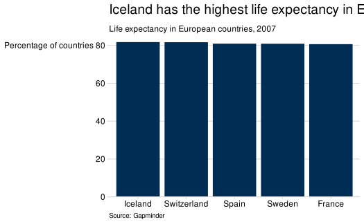
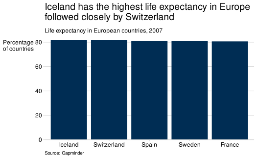
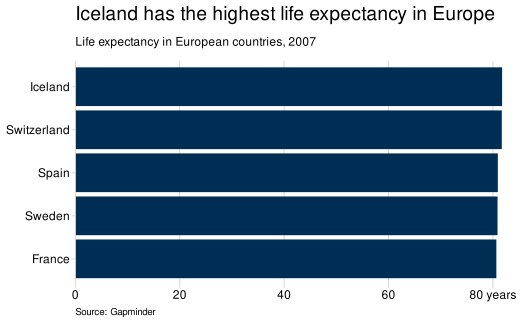

This cookbook provides examples of the code used to produce various chart types using sgplot. There are also examples to demonstrate how to apply further customisation to sgplot charts.
If there is a chart type or task which you think would be useful to include here, please submit a suggestion.
Getting started
Required packages
The following packages are required to produce the example charts in this cookbook:
Use of titles, subtitles and captions
Titles, subtitles and captions have been embedded in the charts in this cookbook for demonstration purposes. However, for accessibility reasons, it is usually preferable to provide titles in the body of the page rather than embedded within the image of the plot. For more guidance on the placement of chart titles, see the Analysis Function charts guidance.
use_sgplot
The examples in this cookbook use the sgplot theme and colour
functions explicitly, however it may be easier to make use of the
use_sgplot() function if your charts all require a similar
style. More information on use_sgplot can be found on the
sgplot homepage.
Line charts
Line chart with one line
gapminder |>
filter(country == "United Kingdom") |>
ggplot(aes(x = year, y = lifeExp)) +
geom_line(linewidth = 1, colour = sg_colour_values["dark-blue"]) +
theme_sg() +
scale_y_continuous(limits = c(0, 82),
breaks = seq(0, 80, 20),
expand = c(0, 0)) +
scale_x_continuous(breaks = seq(1952, 2007, 5)) +
labs(
x = "Year",
y = NULL,
title = "Living Longer",
subtitle = "Life Expectancy in the United Kingdom 1952-2007",
caption = "Source: Gapminder"
)Line chart with multiple lines
gapminder |>
filter(country %in% c("United Kingdom", "China")) |>
ggplot(aes(x = year, y = lifeExp, colour = country)) +
geom_line(linewidth = 1) +
theme_sg(legend = "bottom") +
scale_colour_discrete_sg() +
scale_y_continuous(limits = c(0, 82),
breaks = seq(0, 80, 20),
expand = c(0, 0)) +
scale_x_continuous(breaks = seq(1952, 2007, 5)) +
labs(
x = "Year",
y = NULL,
title = "Living Longer",
subtitle = "Life Expectancy in the United Kingdom and China 1952-2007",
caption = "Source: Gapminder",
colour = NULL
)An example with line labels and no legend can be found in the Annotations section.
Bar charts
bar_data <-
gapminder |>
filter(year == 2007 & continent == "Americas") |>
slice_max(order_by = pop, n = 5)
ggplot(bar_data, aes(x = reorder(country, -pop), y = pop)) +
geom_col(fill = sg_colour_values["dark-blue"]) +
theme_sg() +
scale_y_continuous(
labels = \(x) x / 1e6,
limits = c(0, 3e8 * 1.02),
expand = c(0, 0)
) +
labs(
x = NULL,
y = NULL,
title = "The United States is the most populous country \nin the Americas",
subtitle = "Population of countries in the Americas (millions), 2007",
caption = "Source: Gapminder"
)A bar chart can sometimes look better with horizontal bars. This can
also be a good option if your bar labels are long and difficult to
display horizontally on the x-axis. To produce a horizontal bar chart,
swap the variables defined for x and y in aes() and make a
few tweaks to theme_sg(); draw grid lines for the x-axis
only by setting the grid argument, and draw an axis line
for the y-axis only by setting the axis argument.
ggplot(bar_data, aes(x = pop, y = reorder(country, pop))) +
geom_col(fill = sg_colour_values["dark-blue"]) +
theme_sg(grid = "x", axis = "y") +
scale_x_continuous(
labels = \(x) x / 1e6,
limits = c(0, 3e8 * 1.02),
expand = c(0, 0)
) +
labs(
x = NULL,
y = NULL,
title = "The United States is the most populous country \nin the Americas",
subtitle = "Population of countries in the Americas (millions), 2007",
caption = "Source: Gapminder"
)
Grouped bar chart
To create a grouped bar chart, set stat = "identity" and
position = "dodge" in the call to geom_bar().
Also assign a variable to fill within aes() to
determine what variable is used to create bars within groups. The
legend argument in theme_sg() can be used to
set the position of the legend.
grouped_bar_data <-
gapminder |>
filter(year %in% c(1967, 2007) &
country %in% c("United Kingdom", "Ireland", "France", "Belgium"))
ggplot(grouped_bar_data,
aes(x = country, y = lifeExp, fill = as.factor(year))) +
geom_bar(stat = "identity", position = "dodge") +
scale_y_continuous(expand = c(0, 0)) +
theme_sg(legend = "bottom") +
scale_fill_discrete_sg() +
labs(
x = "Country",
y = NULL,
fill = NULL,
title = "Living longer",
subtitle = "Difference in life expectancy, 1967-2007",
caption = "Source: Gapminder"
)Stacked bar chart
To create a stacked bar chart, set stat = "identity and
position = "fill" in the call to geom_bar()
and assign a variable to fill as before. This will plot
your data as part-to-whole. To plot counts, set
position = "identity".
Caution should be taken when producing stacked bar charts. They can quickly become difficult to interpret if plotting non part-to-whole data, and/or if plotting more than two categories per stack. First and last categories in the stack will always be easier to compare across bars than those in the middle. Think carefully about the story you are trying to tell with your chart.
stacked_bar_data <-
gapminder |>
filter(year == 2007) |>
mutate(lifeExpGrouped = cut(lifeExp,
breaks = c(0, 75, Inf),
labels = c("Under 75", "75+"))) |>
group_by(continent, lifeExpGrouped) |>
summarise(n_countries = n(), .groups = "drop")
ggplot(stacked_bar_data,
aes(x = continent, y = n_countries, fill = lifeExpGrouped)) +
geom_bar(stat = "identity", position = "fill") +
theme_sg(legend = "right") +
scale_y_continuous(expand = c(0, 0), labels = scales::percent) +
coord_cartesian(clip = "off") +
scale_fill_discrete_sg() +
labs(
x = NULL,
y = NULL,
fill = "Life Expectancy",
title = "How life expectancy varies across continents",
subtitle = "Percentage of countries by life expectancy band, 2007",
caption = "Source: Gapminder"
)Histograms
gapminder |>
filter(year == 2007) |>
ggplot(aes(x = lifeExp)) +
geom_histogram(binwidth = 5,
colour = "white",
fill = sg_colour_values["dark-blue"]) +
theme_sg() +
scale_y_continuous(expand = c(0, 0)) +
labs(
x = NULL,
y = "Number of \ncountries",
title = "How life expectancy varies",
subtitle = "Distribution of life expectancy, 2007",
caption = "Source: Gapminder"
)Scatterplots
gapminder |>
filter(year == 2007) |>
ggplot(aes(x = gdpPercap, y = lifeExp)) +
geom_point(colour = sg_colour_values["dark-blue"]) +
theme_sg(axis = "none", grid = "xy") +
scale_x_continuous(
labels = function(x) scales::dollar(x, prefix = "£")
) +
scale_size_continuous(labels = scales::comma) +
labs(
x = "GDP",
y = "Life\nExpectancy",
title = stringr::str_wrap(
"The relationship between GDP and Life Expectancy is complex", 40
),
subtitle = "GDP and Life Expectancy for all countires, 2007",
caption = "Source: Gapminder"
)Small multiples
gapminder |>
filter(continent != "Oceania") |>
group_by(continent, year) |>
summarise(pop = sum(as.numeric(pop)), .groups = "drop") |>
ggplot(aes(x = year, y = pop, fill = continent)) +
geom_area() +
theme_sg(axis = "none", ticks = "none", legend = "none") +
scale_fill_discrete_sg() +
facet_wrap(~ continent, ncol = 2) +
scale_y_continuous(breaks = c(0, 2e9, 4e9),
labels = c(0, "2bn", "4bn")) +
coord_cartesian(clip = "off") +
theme(axis.text.x = element_blank()) +
labs(
x = NULL,
y = NULL,
title = "Asia's rapid growth",
subtitle = "Population growth by continent, 1952-2007",
caption = "Source: Gapminder"
)Pie charts
stacked_bar_data |>
filter(continent == "Europe") |>
ggplot(aes(x = "", y = n_countries, fill = lifeExpGrouped)) +
geom_col(colour = "white", position = "fill") +
coord_polar(theta = "y") +
theme_sg(grid = "none", axis = "none", ticks = "none") +
theme(axis.text = element_blank()) +
scale_fill_discrete_sg() +
labs(
x = NULL,
y = NULL,
fill = NULL,
title = "How life expectancy varies in Europe",
subtitle = "Percentage of countries by life expectancy band, 2007",
caption = "Source: Gapminder"
)Focus charts
bar_data |>
ggplot(
aes(x = reorder(country, -pop), y = pop,
fill = country == "Brazil")
) +
geom_col() +
theme_sg(legend = "none") +
scale_y_continuous(
labels = \(x) x / 1e6,
limits = c(0, 3e8 * 1.02),
expand = c(0, 0)
) +
scale_fill_discrete_sg("focus", reverse = TRUE) +
labs(
x = NULL,
y = NULL,
title = "Brazil has the second highest population in the Americas",
subtitle = "Population of countries in the Americas (millions), 2007",
caption = "Source: Gapminder"
)Interactive charts
To make a ggplot2 chart interactive, use
ggplotly() from the plotly package. Note
however that ggplotly() has a number of ‘quirks’, including
the following:
sgplot uses the ‘sans’ font family, however
plotlydoes not recognise this font. To work around this you should add a further call tothemeto set the font family for text to"".Subtitles and captions are not supported in
ggplotly(). As stated elsewhere in this guidance, titles and subtitles should ideally be included in the body of text surrounding a chart rather than embedded in the chart itself, and so this is hopefully not a big issue. This example therefore has no title, subtitle or caption.
p <-
bar_data |>
# Format text for tooltips
mutate(tooltip = paste0(
"Country: ", country, "\n",
"Population: ", format(pop, big.mark = ",")
)) |>
ggplot(aes(x = reorder(country, -pop), y = pop, text = tooltip)) +
geom_col(fill = sg_colour_values["dark-blue"]) +
theme_sg(ticks = "x") +
theme(text = element_text(family = "")) +
scale_y_continuous(
labels = \(x) x / 1e6,
limits = c(0, 3e8 * 1.02),
expand = c(0, 0)
) +
labs(
x = NULL,
y = NULL
)
plotly::ggplotly(p, tooltip = "text") |>
plotly::config(
modeBarButtons = list(list("resetViews")),
displaylogo = FALSE
)sgplot currently only works with ggplot2 charts, however
there are plans to develop the
package further to support interactive Highcharts produced using the
highcharter
package.
Annotations
Labelling your chart is often preferable to using a legend, as often
this relies on a user matching the legend to the data using colour
alone. The legend can be removed from a chart by setting
legend = "none" in theme_sg().
Either geom_label() or geom_text() can be
used to annotate a chart. The main difference is that
geom_label() draws a rectangle behind the text (white by
default) and a border the same colour as the text
(label.size = NA can be used to remove the border).
geom_text() does not include a background and so text can
be harder to read if it overlaps with other chart elements.
The easiest way to add an annotation is to manually define the co-ordinates of the required position.
ann_data |>
ggplot() +
geom_line(aes(x = year, y = lifeExp, colour = country), linewidth = 1) +
theme_sg(legend = "none") +
scale_colour_discrete_sg() +
scale_y_continuous(limits = c(0, 82),
breaks = seq(0, 80, 20),
expand = c(0, 0)) +
scale_x_continuous(limits = c(1952, 2017),
breaks = seq(1952, 2007, 5)) +
geom_label(x = 2008, y = 73, label = "China",
hjust = 0,
vjust = 0.5,
label.size = NA) +
geom_label(x = 2008, y = 79.4, label = "United Kingdom",
hjust = 0,
vjust = 0.5,
label.size = NA) +
labs(
x = "Year",
y = NULL,
title = "Living Longer",
subtitle = "Life Expectancy in the United Kingdom and China 1952-2007",
caption = "Source: Gapminder"
)
However, this makes the code difficult to reuse as values are hard coded and not automatically generated from the data. Automating the position of annotations is possible, but more fiddly.
One way to automate this is to create a supplementary data frame with
desired co-ordinates of the labels (see ann_labs in the
example below). nudge arguments can be used to displace
text to improve the positioning.
ann_labs <- ann_data |>
group_by(country) |>
filter(year == max(year)) |>
ungroup()
ann_data |>
ggplot() +
geom_line(aes(x = year, y = lifeExp, colour = country), linewidth = 1) +
theme_sg(legend = "none") +
scale_colour_discrete_sg() +
scale_y_continuous(limits = c(0, 82),
breaks = seq(0, 80, 20),
expand = c(0, 0)) +
scale_x_continuous(limits = c(1952, 2017),
breaks = seq(1952, 2007, 5)) +
geom_label(data = ann_labs,
aes(x = year, y = lifeExp, label = country),
hjust = 0,
vjust = 0.5,
nudge_x = 0.5,
label.size = NA) +
labs(
x = "Year",
y = NULL,
title = "Living Longer",
subtitle = "Life Expectancy in the United Kingdom and China 1952-2007",
caption = "Source: Gapminder"
)Annotations may also be used to add value labels to a bar chart. Note
that geom_text() is used here as a background is not
required.
ggplot(bar_data, aes(x = reorder(country, -pop), y = pop)) +
geom_col(fill = sg_colour_values["dark-blue"]) +
geom_text(aes(label = format(pop, big.mark = ",")),
nudge_y = -max(bar_data$pop) * 0.05,
colour = "white") +
theme_sg() +
scale_y_continuous(
labels = \(x) x / 1e6,
limits = c(0, 3e8 * 1.02),
expand = c(0, 0)
) +
labs(
x = NULL,
y = NULL,
title = "The United States is the most populous country \nin the Americas",
subtitle = "Population of countries in the Americas (millions), 2007",
caption = "Source: Gapminder"
)Other customisations
The following section demonstrates some common customisations made to ggplot2 charts. Each example builds on the previous one.
Note that theme_sg() has arguments to control the legend
position and appearance of grid lines, axis lines and axis ticks. More
information on accepted values can be found in the help file.
Customisations will be made to the following basic horizontal bar chart:
bar_data |>
ggplot(aes(x = pop, y = country)) +
geom_col(fill = sg_colour_values["dark-blue"]) +
theme_sg(axis = "y", grid = "x")
Sorting a bar chart
To control the order of bars in a chart, wrap the variable you want
to arrange with reorder() and specify what variable you
want to sort by. The following example sorts bars in ascending order of
life expectancy. To sort in descending order, you would change this to
reorder(country, desc(lifeExp)).
bar_data |>
ggplot(aes(x = pop, y = reorder(country, pop))) +
geom_col(fill = sg_colour_values["dark-blue"]) +
theme_sg(axis = "y", grid = "x")
Changing chart titles and wrapping text
Chart titles such as the main title, subtitle, caption, axis titles
and legend titles, can be controlled using labs(). A title
can be removed using NULL.
Remember that it is best practice to provide chart titles and subtitles in the main body of text, rather than embedded in the chart.
last_plot() +
labs(
x = NULL,
y = NULL,
title = "The United States is the most populous country in the Americas",
subtitle = "Population of countries in the Americas (millions), 2007",
caption = "Source: Gapminder"
)If text is too long, it may be cut off or distort the dimensions of the chart. There are two suggested ways to solve this issue.
Insert \n within a string to force a line break:

Use stringr::str_wrap() to set a maximum character width
of the string:
last_plot() +
labs(
title = stringr::str_wrap(
"The United States is the most populous country in the Americas",
width = 50
)
)
Reducing space between chart and axis
By default, a bar chart will have a gap between the bottom of the bars and the axis. This can be removed as follows:
last_plot() +
scale_x_continuous(expand = c(0, 0))The equivalent adjustment can be made for the y-axis using
scale_y_continuous.
Changing axis limits, breaks and labels
Axis limits, breaks and labels for continuous variables can be
controlled using scale_x/y_continuous(). For discrete
variables, labels can be changed using scale_x/y_discrete()
or alternatively by recoding the variable in the data before creating a
chart.
Note that further calls to scale_x/y_continuous will
overwrite previous calls, hence why expand = c(0, 0) has
been included again in these examples.
last_plot() +
scale_x_continuous(expand = c(0, 0),
limits = c(0, 3e8 * 1.1),
breaks = seq(0, 3e8, 5e7),
labels = c(seq(0, 250, 50), "300 million"))
Labels can also be formatted using a function. The scales package provides many convenient functions for this, and can handle percentages, currency and thousands separators.
last_plot() +
scale_x_continuous(expand = c(0, 0),
limits = c(0, 3e8 * 1.1),
breaks = seq(0, 3e8, 1e8),
labels = scales::label_comma())
Adjusting theme elements
If you find you need to adjust theme elements for your chart, this
can be done using theme(). Note that this should be done
after the call to theme_sg(), otherwise
theme_sg() may overwrite the specifications you’ve
made.
last_plot() +
theme(axis.line.y = element_line(colour = "black"),
axis.ticks.y = element_line(colour = "black"))Avoiding axis/grid lines being cut off
Axis lines and grid lines can sometimes appear ‘cut off’ if they are drawn at the limits of the chart range. You can see in the following example that the top grid line is slightly narrower than the adjacent tick mark on the y-axis. This is because the y-axis limit is 100%. As the grid line is centred at 100%, the top half of the line is ‘cut off’.
stacked_bar_data |>
ggplot(aes(x = continent, y = n_countries, fill = lifeExpGrouped)) +
geom_bar(stat = "identity", position = "fill") +
theme_sg(legend = "bottom") +
scale_y_continuous(expand = c(0, 0), labels = scales::percent) +
scale_fill_discrete_sg() +
labs(
x = NULL,
y = NULL,
fill = "Life Expectancy",
title = "How life expectancy varies across continents",
subtitle = "Percentage of countries by life expectancy band, 2007",
caption = "Source: Gapminder"
)
This can be corrected as follows:
last_plot() +
coord_cartesian(clip = "off")
Adding a reference line
To add a horizontal or vertical line across the whole plot, use
geom_hline() or geom_vline(). This can be
useful to highlight a threshold or average level.
gapminder |>
filter(country == "United Kingdom") |>
ggplot(aes(x = year, y = lifeExp)) +
geom_hline(yintercept = 75,
colour = sg_colour_values["grey"],
linewidth = 1,
linetype = "longdash") +
geom_line(linewidth = 1,
colour = sg_colour_values["dark-blue"]) +
annotate(geom = "text", x = 2007, y = 70, label = "Age 70") +
theme_sg() +
scale_y_continuous(limits = c(0, 82),
breaks = seq(0, 80, 20),
expand = c(0, 0)) +
scale_x_continuous(breaks = seq(1952, 2007, 5)) +
labs(
x = "Year",
y = NULL,
title = "Living Longer",
subtitle = "Life Expectancy in the United Kingdom 1952-2007",
caption = "Source: Gapminder"
)Using different colour palettes
sgplot provides colour palettes as set out by the Scottish Government Design System. These palettes have been developed to meet the Web Content Accessibility Guidelines 2.1 for graphical objects.
The main palette is the default for discrete colour/fill functions, and the sequential palette for continuous colour/fill functions.
The Scottish Government palettes are used by default, however palettes are also available for Social Security Scotland and the Government Analysis Function.
More information on the colours used in sgplot can be found at
vignette("colours").
Using non-default sgplot colour palettes
There may be instances where you want to use an sgplot colour palette
other than the default. The full list of available palettes can be found
by running either sgplot::sg_colour_palettes or
sgplot::af_colour_palettes.
To use the Scottish Government main-extended
palette:
gapminder |>
filter(country %in% c("United Kingdom", "China", "India",
"Sweden", "Namibia", "Brazil")) |>
ggplot(aes(x = year, y = lifeExp, colour = country)) +
geom_line(linewidth = 1) +
theme_sg(legend = "bottom") +
scale_colour_discrete_sg("main-extended") +
scale_y_continuous(limits = c(0, 82),
breaks = seq(0, 80, 20),
expand = c(0, 0)) +
scale_x_continuous(breaks = seq(1952, 2007, 5)) +
labs(
x = "Year",
y = NULL,
title = "Living Longer",
subtitle = "Life Expectancy in the United Kingdom and China 1952-2007",
caption = "Source: Gapminder",
colour = NULL
)Note: This chart is for demonstration purposes only. Accessibility guidance recommends using a maximum of four colours to avoid clutter.
To use an Analysis Function palette, set
palette_type = "af" when using any of the
scale_ colour functions. For
example, to use the Analysis Function main2 palette:
gapminder |>
filter(country %in% c("United Kingdom", "China")) |>
ggplot(aes(x = year, y = lifeExp, colour = country)) +
geom_line(linewidth = 1) +
theme_sg(legend = "bottom") +
scale_colour_discrete_sg("main2", palette_type = "af") +
scale_y_continuous(limits = c(0, 82),
breaks = seq(0, 80, 20),
expand = c(0, 0)) +
scale_x_continuous(breaks = seq(1952, 2007, 5)) +
labs(
x = "Year",
y = NULL,
title = "Living Longer",
subtitle = "Life Expectancy in the United Kingdom and China 1952-2007",
caption = "Source: Gapminder",
colour = NULL
)
Using your own colour palette
There may be instances where you’d like to use a colour palette that is not available in sgplot. If so, this should be carefully considered to ensure it meets accessibility requirements. The Analysis Function guidance outlines appropriate steps for choosing your own accessible colour palette and should be used.
my_palette <- c("#0F820D", "#000000")
gapminder |>
filter(country == "United Kingdom") |>
ggplot(aes(x = year, y = lifeExp)) +
geom_line(linewidth = 1, colour = my_palette[1]) +
theme_sg() +
scale_y_continuous(limits = c(0, 82),
breaks = seq(0, 80, 20),
expand = c(0, 0)) +
scale_x_continuous(breaks = seq(1952, 2007, 5)) +
labs(
x = "Year",
y = NULL,
title = "Living Longer",
subtitle = "Life Expectancy in the United Kingdom 1952-2007",
caption = "Source: Gapminder"
)
gapminder |>
filter(country %in% c("United Kingdom", "China")) |>
ggplot(aes(x = year, y = lifeExp, colour = country)) +
geom_line(linewidth = 1) +
theme_sg(legend = "bottom") +
scale_colour_manual(values = my_palette) +
scale_y_continuous(limits = c(0, 82),
breaks = seq(0, 80, 20),
expand = c(0, 0)) +
scale_x_continuous(breaks = seq(1952, 2007, 5)) +
labs(
x = "Year",
y = NULL,
title = "Living Longer",
subtitle = "Life Expectancy in the United Kingdom and China 1952-2007",
caption = "Source: Gapminder",
colour = NULL
)Adding a new colour palette to sgplot
If you use a different palette regularly and feel it would be useful for this to be added to sgplot, please make a suggestion as per the contributing guidance.
Acknowledgments
This cookbook and the examples it contains have been inspired by the BBC Visual and Data Journalism cookbook for R graphics and their bbplot package.